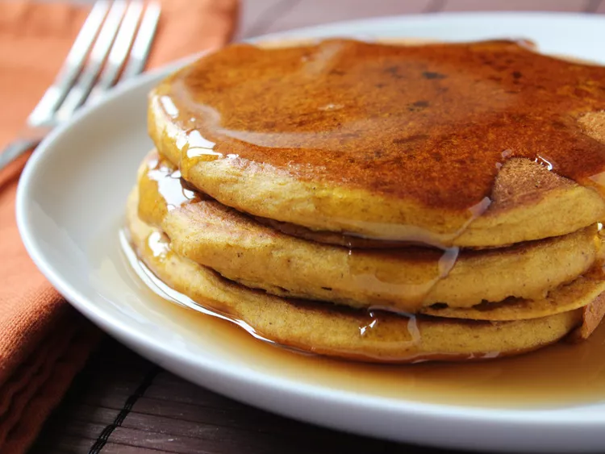

Pumpkin Pancakes

Description
What's the coziest way to start your day? With a stack of pumpkin pancakes, of course! This recipe will quickly become
a staple in your fall breakfast rotation.
Ingredients
- 1 ½ cups milk
- 1 cup pumpkin puree
- 1 large egg
- 2 tablespoons vegetable oil
- 2 tablespoons vinegar
- 2 cups all-purpose flour
- 3 tablespoons brown sugar
- 2 teaspoons baking powder
- 1 teaspoon baking soda
- 1 teaspoon ground allspice
- 1 teaspoon ground cinnamon
- ½ teaspoon salt
- cooking spray
Directions
- Mix the wet ingredients in one bowl and the dry ingredients in another.
- Add the dry mixture to the wet mixture.
- Scoop the batter onto a hot, oiled griddle and cook until bubbly on top.
- Flip and cook until golden brown on both sides.